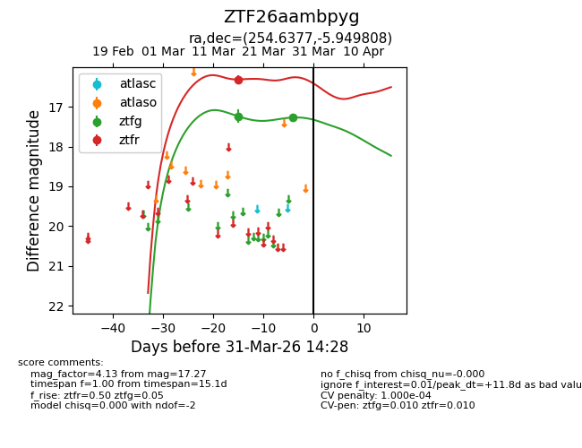
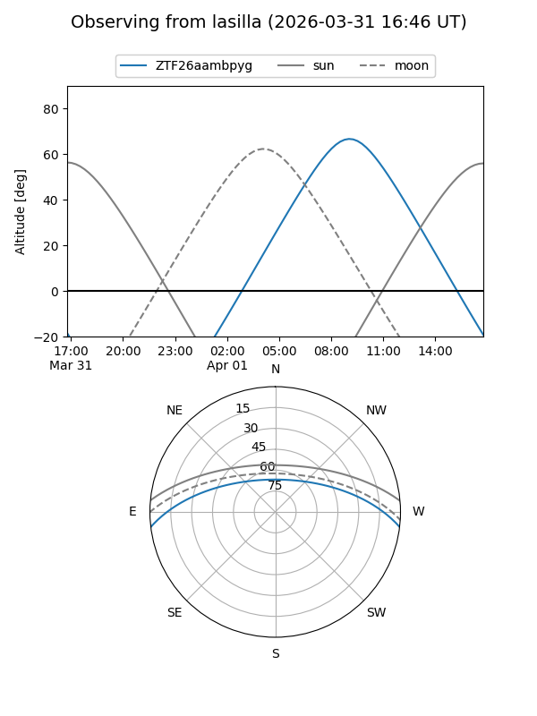
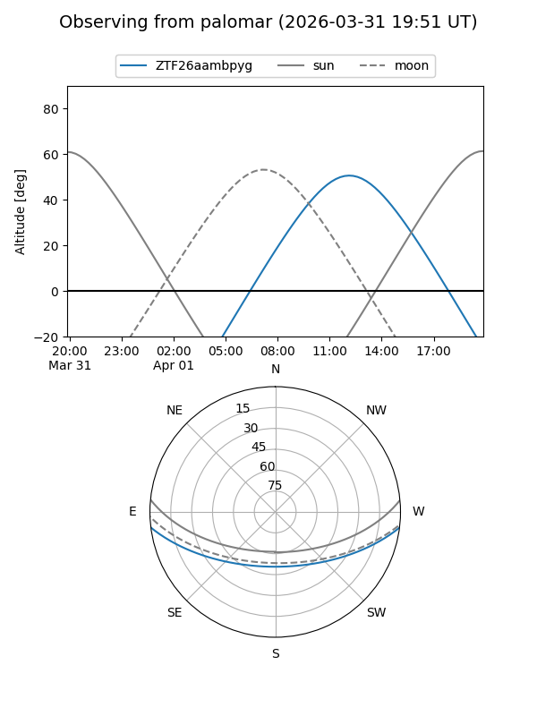
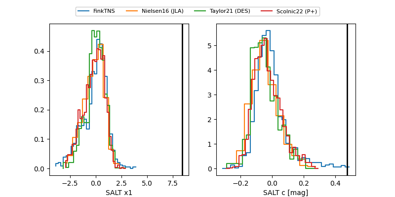

ZTF26aambpyg
Target ZTF26aambpyg at 2026-03-31 14:31
Aliases and brokers:
FINK: link
Lasair: link
ALeRCE: link
alt names
ZTF26aambpyg (ztf,fink_ztf)
Coordinates:
equatorial (ra, dec) = 254.6377,-5.94981
equatorial (HMS+DMS) = 16:58:33.06,-05:56:59.31
galactic (l, b) = (13.6426,+21.79760)
Flags:
likely cv
Photometry:
last ztfg=17.27, ztfr=16.31
2 ztfg, 1 ztfr detections
Lightcurve

Visibility


Additional plots
